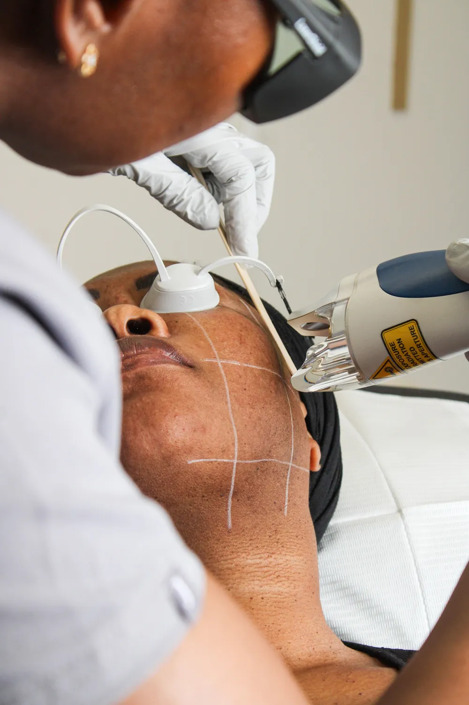
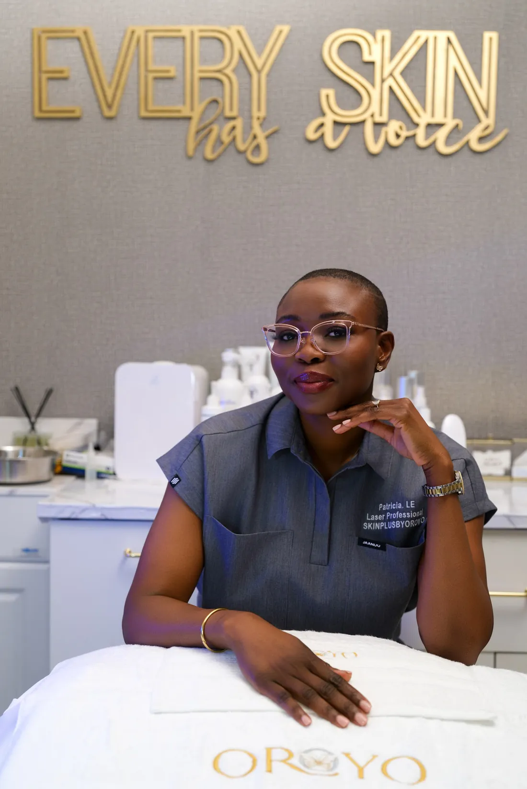
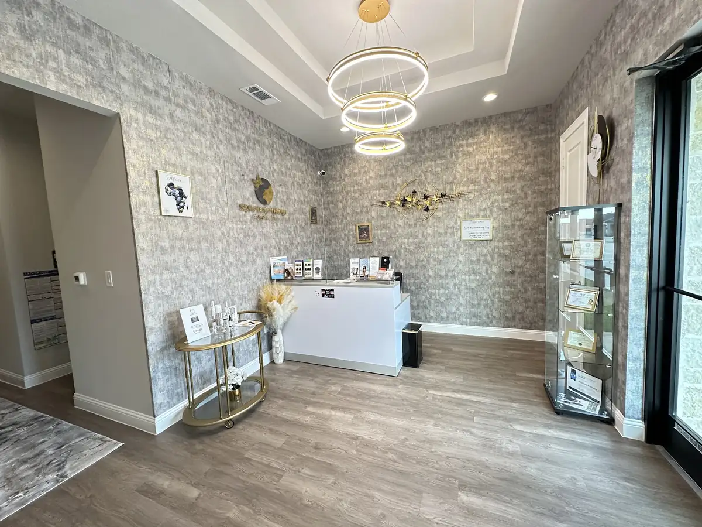
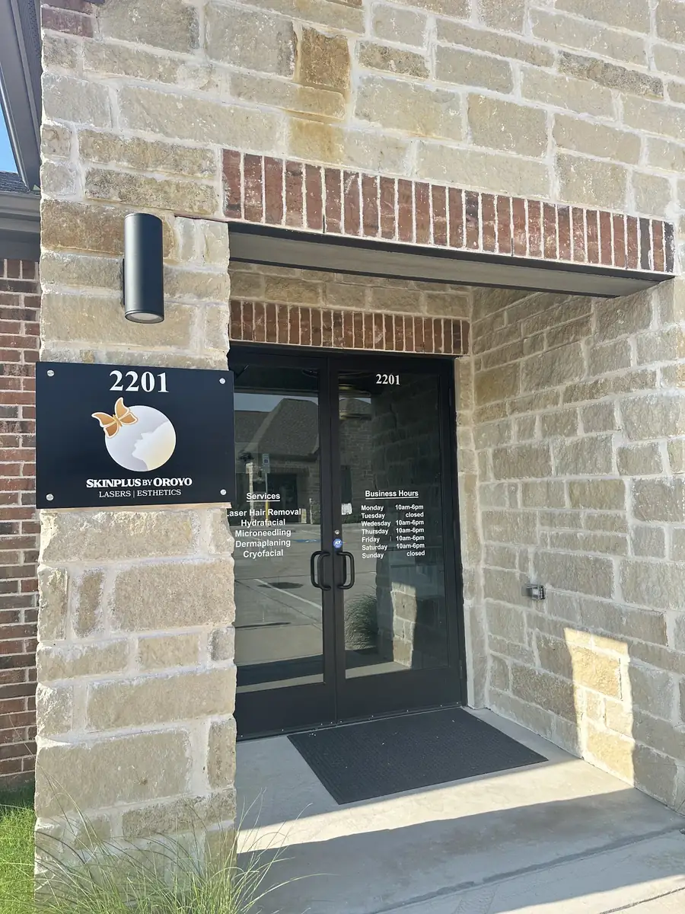
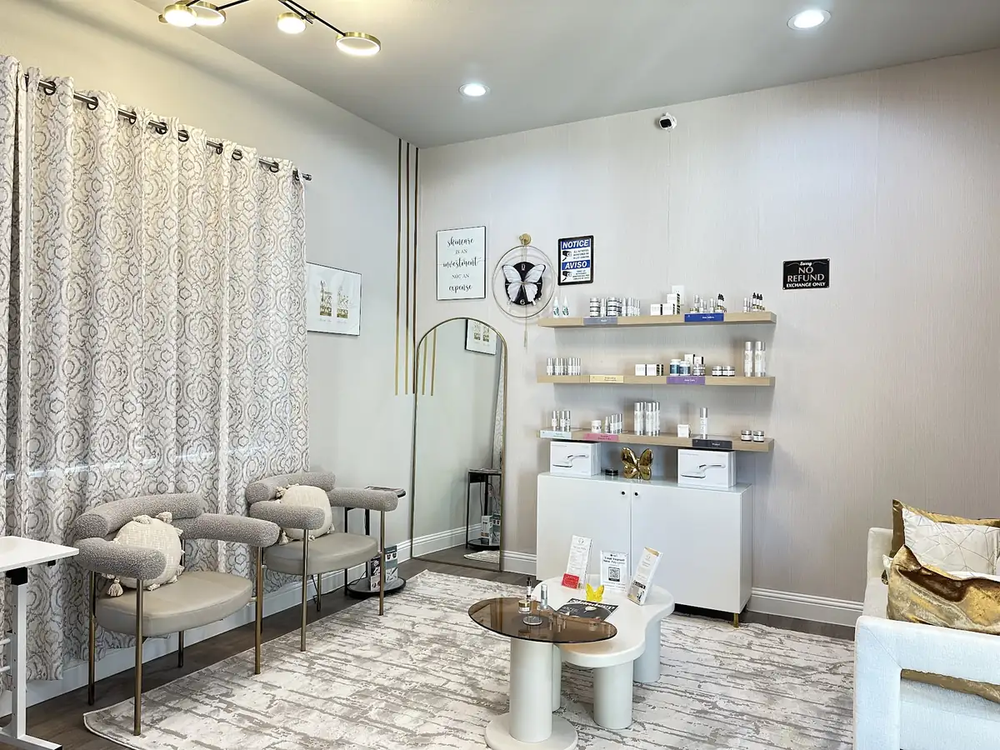
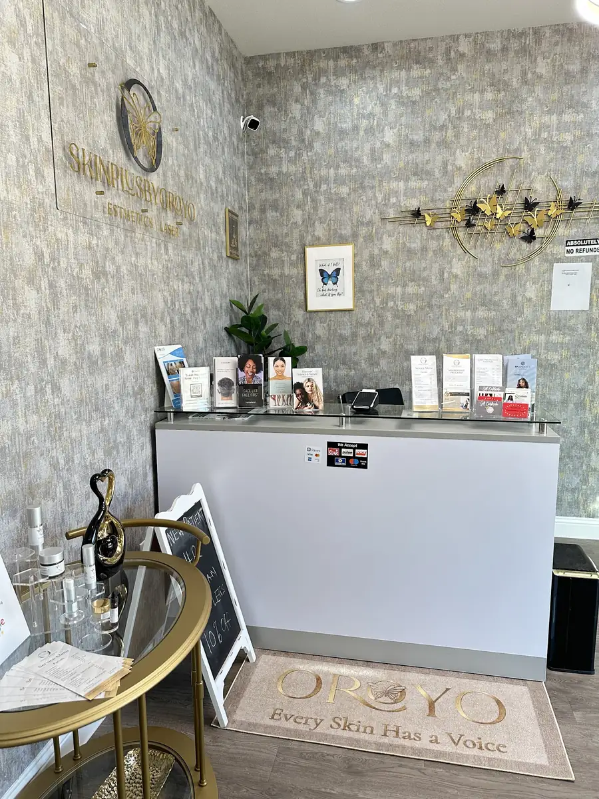
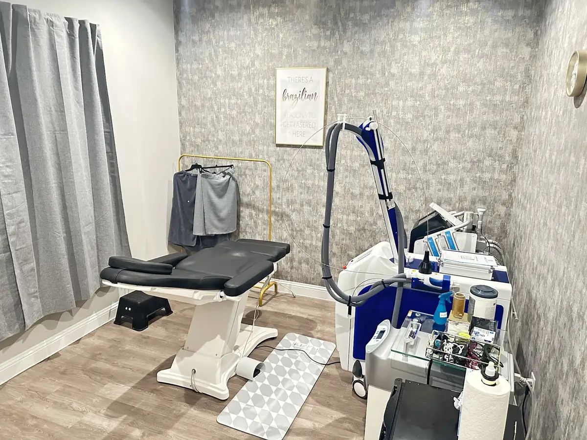
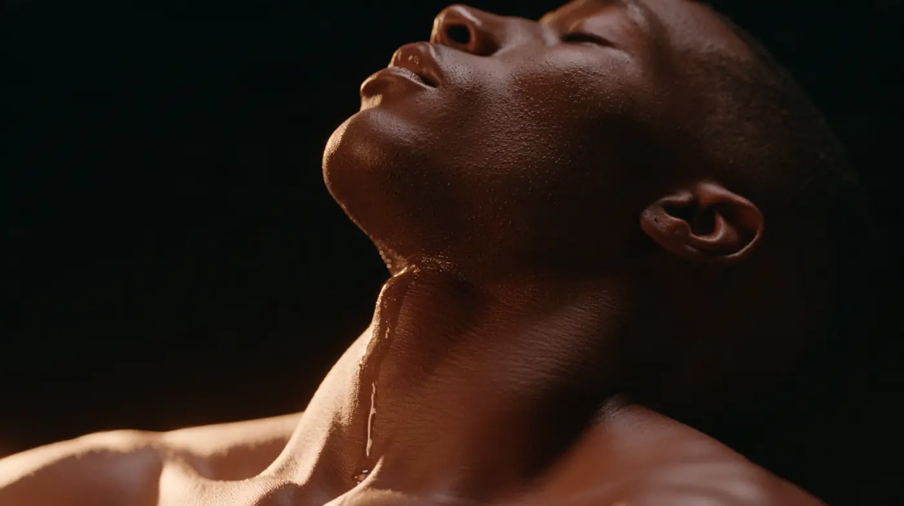
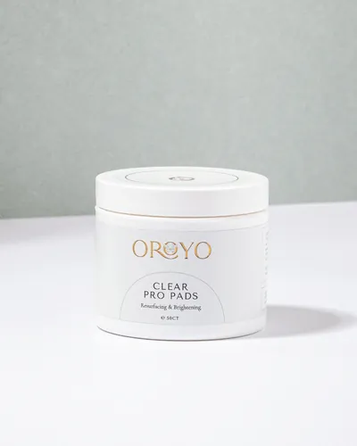

Two shoot days in Little Elm. Four looks. 32 shots, and every one already has a place in a finished piece.
Shoot
Nov 23–24 or Nov 30–Dec 1
Home base
Your studio, Suite 2201
Delivered
Wide 16:9 and vertical 9:16
Circle anything you love, frames or whole shots. Your circles collect at the bottom of the screen, ready to text me.
Your Skin, Finally SeenRoll 01
01 · Your gold wall
02 · The Black Room
03 · Their world
04 · The editorial

05 · The work
06 · Court at nine
The looks
Four looks. Mix them however you like.
Every story can live in any of these. A testimonial can sit on black or in your lounge. An opening can be acted or real. We choose per piece, not once for the whole campaign.
Look A · Testimonials
The Black Room
Nothing in the frame but the person and the story.
With no room to look at, people listen. This is the look for client stories, the Thirty Seconds series and the ads.
We build it inside your studio: black behind the chair and one soft light. No second location, and your clients stay somewhere they already feel safe.
85mm and 50mmOne soft key, deep falloffEyes just past the lensGold rim keeps deep skin glowing
9:16
A1 · Concept frame
9:16
A2 · Concept frame
9:16
A3 · Concept frame
9:16
A4 · Concept frame
Look B · On location
Your studio
Your real rooms, shot like a campaign.
We scouted your studio from your Google listing, then built each frame on the real room: the same walls, the same chandelier, the same gold letters, lit and cast the way we would shoot them.
Left, your space today. Right, what it becomes on camera.
Scout photos from your Google listingConcept frames built on your real rooms

Today
9:16
On camera
B1 · Scout + concept
1 The gold wall. Home of your founder's film. The words glow behind you, never across your face.

Today
9:16
On camera
B2 · Scout + concept
2 The lobby at golden hour. Chandelier on, overheads off. The walk-in starts at the door and ends at your desk.

Today
9:16
On camera
B3 · Scout + concept
3 Suite 2201. The arrival: the door opens and the story starts.

Today
9:16
On camera
B4 · Scout + concept
4 The lounge. Client stories in your grey chairs, your shelves glowing behind them.

Today
9:16
On camera
B5 · Scout + concept
5 "Every Skin Has a Voice" is already on your floor. It becomes our top-down opener.

Today
9:16
On camera
B6 · Scout + concept
6 The treatment room, cleared and lit. The laser and the gold rail stay in frame.
Look C · Dramatized openings
Their world
The before, acted. The lines stay short.
Five-second openings in the places your clients actually live: the hospital garage at dawn, the video call, the courthouse steps. These are the first seconds of the ads.
Actors play the before. They never speak as clients.
Cinema-wide, handheld calmReal light from each placeOne line on screen, seven words or fewer
9:16
C1 · Concept frame
Twelve-hour shift. No time for tweezers.
9:16
C2 · Concept frame
Camera on. Mind on the meeting.
9:16
C3 · Concept frame
Give the razor a rest.
9:16
C4 · Concept frame
Court at nine. No mirror check.
9:16
C5 · Concept frame
Not thinking about her skin.
Look D · Beauty editorial
The editorial
Your aftercare, lit like a launch.
Your two OROYO aftercare products get their own beauty films and stills: slow, glossy and close. Sets in cream, stone and forest green, with your butterfly cast in light.
The concept frames use stand-in bottles. On set, it is your real packaging, exactly as it looks below.
100mm macro and 85mmHard sun, butterfly cutoutBuilt for wide and vertical
9:16
D1 · Concept frame
D2 · Concept frame
D3 · Concept frame

9:16
D4 · Concept frame
Your real bottles · from oroyoskincare.com
D5 · Your photo
D6 · Your photo
D7 · Your photo

D8 · Your photo
Mix it
Pick an open, a voice and a close. That's a spot.
We shoot every piece so it cuts with every other piece. Try it: flip through each reel or shuffle all three.


 Your studio · Concept frame
Your studio · Concept frame Your studio · Concept frame
Your studio · Concept frame Their world · Concept frame
Their world · Concept frame